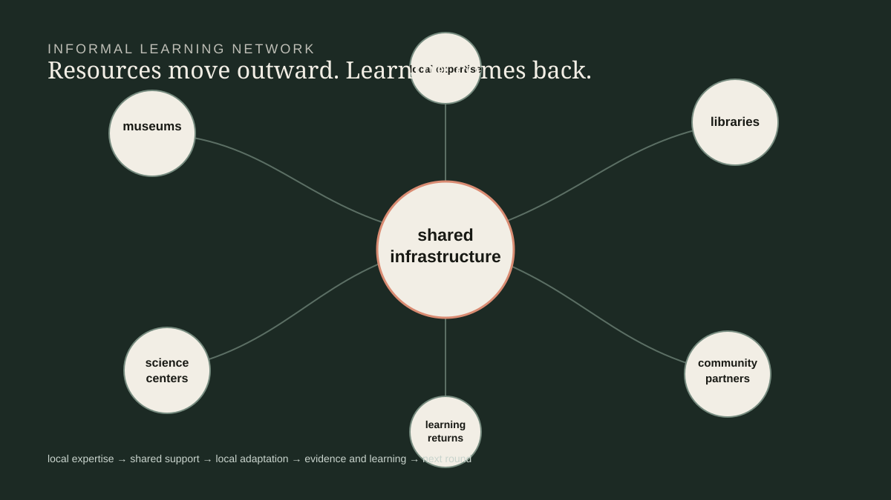

The Informal Learning Network
I lead the operating system around a national portfolio of partner-led astronomy education: funding cycles, partner stewardship, implementation support, professional learning, evaluation, and the learning that informs the next round.
Follow the network